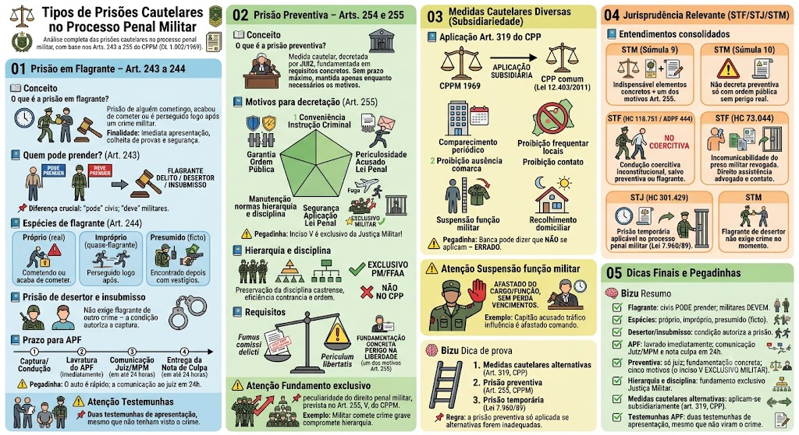

O que é a prisão em flagrante?
O que é a prisão em flagrante?
A prisão em flagrante é a prisão de alguém que está cometendo, acabou de cometer ou é perseguido logo após cometer um crime militar. No âmbito do CPPM, a prisão em flagrante tem regras próprias, mas compartilha a mesma essência do direito penal comum.
Finalidade: garantir a imediata apresentação do autor à autoridade competente, a colheita de provas e a segurança da investigação.
Quem pode prender? (Art. 243)
Quem pode prender? (Art. 243)
Art. 243: 'Qualquer pessoa poderá prender quem esteja em flagrante delito, ou seja desertor ou insubmisso. Os militares, nesses casos, têm o dever de prender.'
Regras:
- Qualquer pessoa do povo – tem a faculdade (pode) de prender quem esteja em flagrante de crime militar, ou que seja desertor ou insubmisso.
- Militares – têm o dever de prender nessas mesmas situações. A omissão pode caracterizar crime militar (ex.: art. 196 do CPM – deixar de prender desertor).
📌 Diferença crucial (pegadinha): \"pode\" para civis; \"deve\" para militares.
⚠️ Exceção: A captura de desertor e insubmisso não exige que estejam cometendo um crime no momento – a própria condição de desertor/insubmisso autoriza a prisão.
Espécies de flagrante (Art. 244)
Espécies de flagrante (Art. 244)
Art. 244: 'Considera-se em flagrante delito quem está cometendo a infração, quem acaba de cometê-la, quem é perseguido logo após, e quem é encontrado depois com objetos que façam presumir ser o autor da infração.'
Classificação doutrinária:
- Flagrante próprio (real): o agente está cometendo o crime ou acabou de cometê-lo (ainda no local).
- Flagrante impróprio (quase-flagrante): o agente é perseguido logo após o crime, pela autoridade ou por particulares, em situação que indique sua autoria.
- Flagrante presumido (ficto): o agente é encontrado depois, com objetos, armas ou vestígios que façam presumir ser o autor do crime (ex.: encontrado com a arma do crime horas depois).
⚠️ Pegadinha: Mesmo que não haja testemunhas do crime, o auto de prisão em flagrante (APF) deve ser lavrado com duas testemunhas da apresentação do preso (testemunhas instrumentárias).
Prisão de desertor e insubmisso (peculiaridade militar)
Prisão de desertor e insubmisso (peculiaridade militar)
O CPPM trata de forma específica a captura de desertor e insubmisso:
Desertor (Art. 243, p.ú.):
- O militar ou civil pode prender o desertor a qualquer tempo, dentro do prazo da deserção (ou mesmo após, se ainda não prescrito).
- A prisão do desertor não depende de flagrante de outro crime – a condição de desertor já autoriza a captura.
- Após a captura, o desertor deve ser apresentado à autoridade militar para os procedimentos disciplinares e penais.
Insubmisso:
- Aquele que não se apresenta ao serviço militar obrigatório no prazo legal.
- A insubmissão autoriza a prisão imediata, sendo o insubmisso conduzido à junta de serviço militar para incorporação ou julgamento.
⚠️ Pegadinha: A prisão de desertor e insubmisso não exige flagrante de outro delito – a condição especial já justifica a captura.
Prazo para lavratura do Auto de Prisão em Flagrante (APF)
Prazo para lavratura do Auto de Prisão em Flagrante (APF)
O CPPM não fixa um prazo específico em horas para a conclusão do APF, mas a interpretação sistemática com a CF/88 e a jurisprudência estabelece:
- O APF deve ser lavrado imediatamente (no menor tempo possível);
- A comunicação ao juiz competente e ao Ministério Público Militar deve ser feita em até 24 horas (art. 5º, LXII, CF e art. 248, CPPM);
- A entrega da nota de culpa ao preso também deve ocorrer em até 24 horas (art. 5º, LXIV, CF).
Fluxo prático:
1. Captura → condução à autoridade militar;
2. Lavratura do APF (com as testemunhas);
3. Comunicação imediata ao juiz e ao MP;
4. Entrega da nota de culpa ao preso.
⚠️ Pegadinha: A banca pode perguntar se o prazo para lavratura do APF é de 24 horas – o correto é que a comunicação ao juiz é em 24h; o auto deve ser lavrado o mais rápido possível.
Testemunhas do APF (pegadinha clássica)
Testemunhas do APF (pegadinha clássica)
📌 Mesmo que não haja testemunhas da infração penal, o auto de prisão em flagrante deve ser lavrado com a presença de duas testemunhas que presenciaram a apresentação do preso (testemunhas de reconhecimento ou instrumentárias).
Exceção: Se não houver testemunhas disponíveis, o auto pode ser lavrado com a assinatura de duas pessoas que tenham visto o preso ser trazido, garantindo a regularidade formal.
O que é a prisão preventiva?
O que é a prisão preventiva?
Art. 254: 'A prisão preventiva poderá ser decretada pelo juiz, antes do julgamento, nos termos do artigo seguinte, quando for necessária para garantir a ordem pública, a conveniência da instrução criminal, a segurança da aplicação da lei penal, ou a manutenção das normas de hierarquia e disciplina.'
Natureza: é medida cautelar, excepcional, decretada pelo juiz (não pela autoridade policial), fundamentada em requisitos concretos.
Prazo: a prisão preventiva não tem prazo máximo fixado em lei, mas deve ser mantida apenas enquanto durarem os motivos que a justificaram (princípio da proporcionalidade e da duração razoável do processo).
Motivos para decretação (Art. 255) – SUPER COBRADO!
Motivos para decretação (Art. 255) – SUPER COBRADO!
Art. 255: 'A prisão preventiva pode ser decretada quando:'
- I – Garantia da ordem pública: para evitar a reiteração criminosa ou a comoção social;
- II – Conveniência da instrução criminal: para evitar que o acusado destrua provas, ameace testemunhas ou dificulte a instrução;
- III – Periculosidade do acusado: quando o acusado demonstra ser perigoso (ex.: reincidência, violência);
- IV – Segurança da aplicação da lei penal: para garantir que, em caso de condenação, a pena possa ser cumprida (ex.: risco de fuga);
- V – Manutenção das normas de hierarquia e disciplina – fundamento EXCLUSIVO da Justiça Militar, que não existe no processo penal comum.
⚠️ Pegadinha: O inciso V é exclusivo do processo penal militar! A banca pode afirmar que esse fundamento existe na justiça comum – ERRADO.
Hierarquia e disciplina – fundamento EXCLUSIVO da Justiça Militar
Hierarquia e disciplina – fundamento EXCLUSIVO da Justiça Militar
O inciso V do Art. 255 do CPPM prevê a manutenção das normas de hierarquia e disciplina como fundamento autônomo para a prisão preventiva.
Por que é exclusivo?
- A Justiça Militar visa não apenas a punição do crime, mas também a preservação da disciplina castrense, essencial para a eficiência e a ordem das Forças Armadas e das Polícias Militares.
- Um militar que comete um crime grave pode gerar desmoralização da tropa, comprometendo a hierarquia – a prisão preventiva pode ser decretada para restabelecer a ordem.
No processo penal comum (CPP): não existe esse fundamento – a prisão preventiva no CPP tem outros motivos (ordem pública, conveniência da instrução, etc.).
⚠️ Pegadinha: A banca pode afirmar que a \"manutenção da hierarquia e disciplina\" também fundamenta a preventiva no processo comum – ERRADO. É exclusivo do processo penal militar.
Fundamento exclusivo: hierarquia e disciplina
Fundamento exclusivo: hierarquia e disciplina
📌 O fundamento da manutenção das normas de hierarquia e disciplina é uma peculiaridade do direito penal militar, prevista no Art. 255, V, do CPPM.
Justificativa: A Justiça Militar visa não apenas a punição do crime, mas também a preservação da disciplina castrense, essencial para a eficiência e a ordem das Forças Armadas e das Polícias Militares.
Exemplo: Um militar que comete um crime grave pode gerar desmoralização da tropa, comprometendo a hierarquia – a prisão preventiva pode ser decretada para restabelecer a ordem.
⚠️ Pegadinha: A banca pode dizer que a \"manutenção da hierarquia e disciplina\" também fundamenta a preventiva no processo comum – ERRADO. É exclusivo do processo penal militar.
Requisitos para decretação da preventiva
Requisitos para decretação da preventiva
Para a decretação da prisão preventiva, além de um dos motivos do Art. 255, o juiz deve verificar:
- Fumus comissi delicti: prova da existência do crime e indícios suficientes de autoria;
- Periculum libertatis: perigo gerado pela liberdade do acusado (um dos motivos do Art. 255);
- Fundamentação concreta: não basta invocar genericamente os motivos – é necessário demonstrar, com elementos dos autos, por que a preventiva é necessária.
Súmula 9 do STM: 'Para a decretação da prisão preventiva militar, é indispensável a existência de elementos concretos de autoria e materialidade, além da demonstração de um dos motivos do Art. 255 do CPPM.'
⚠️ Pegadinha: A preventiva não pode ser decretada com base em meras suspeitas – exige lastro probatório mínimo (justa causa).
Aplicação do Art. 319 do CPP ao processo penal militar
Aplicação do Art. 319 do CPP ao processo penal militar
O CPPM é de 1969 e previa basicamente a prisão preventiva e o flagrante. No entanto, com a alteração trazida pela Lei nº 12.403/2011 no CPP comum, os tribunais superiores pacificaram o entendimento de que as medidas cautelares diversas da prisão (previstas no art. 319 do CPP comum) também se aplicam subsidiariamente ao processo penal militar, visando a adequação ao princípio da proporcionalidade e da presunção de inocência.
Exemplos de medidas cautelares (Art. 319, CPP):
- Comparecimento periódico em juízo;
- Proibição de ausentar-se da comarca;
- Proibição de frequentar determinados lugares;
- Proibição de contato com determinadas pessoas;
- Suspensão do exercício da função pública militar (adaptação específica);
- Recolhimento domiciliar noturno ou em dias de folga.
Fundamento: A prisão preventiva é medida extrema; deve ser utilizada apenas quando as medidas alternativas forem insuficientes.
⚠️ Pegadinha: A banca pode afirmar que as cautelares do art. 319 do CPP não se aplicam ao processo penal militar – ERRADO, aplicam-se subsidiariamente, desde que compatíveis com o rito castrense.
Suspensão do exercício da função pública militar
Suspensão do exercício da função pública militar
Uma das medidas cautelares possíveis é a suspensão do exercício da função pública militar (adaptação do inciso VI do art. 319 do CPP). O militar pode ser afastado do cargo ou da função, sem perda de vencimentos, para evitar que continue a cometer crimes ou influencie testemunhas.
Prazo: a suspensão pode ser decretada pelo juiz, por prazo determinado, e deve ser revista periodicamente.
Exemplo: Um capitão acusado de tráfico de influência pode ser afastado do comando durante a investigação para evitar que continue praticando o crime.
Dica de prova – medidas cautelares
Dica de prova – medidas cautelares
📌 Ordem de preferência (princípio da subsidiariedade):
1. Medidas cautelares alternativas (art. 319, CPP);
2. Prisão preventiva (art. 255, CPPM);
3. Prisão temporária (Lei 7.960/89).
Regra: a prisão preventiva só deve ser aplicada quando as medidas cautelares alternativas forem inadequadas ou insuficientes.
Entendimentos consolidados
Entendimentos consolidados
Os tribunais superiores pacificaram importantes teses sobre a prisão em flagrante e a preventiva no âmbito militar:
Resumo para provas
Resumo para provas
📌 Flagrante: qualquer pessoa PODE prender; militares DEVEM prender.
📌 Espécies: próprio, impróprio, presumido (ficto).
📌 Desertor/insubmisso: não precisam estar cometendo crime – a condição já autoriza a prisão.
📌 APF: lavrado imediatamente; comunicação ao juiz em 24h; nota de culpa em 24h.
📌 Preventiva: só juiz; fundamentação concreta; cinco motivos (o inciso V é exclusivo militar).
📌 Hierarquia e disciplina: fundamento exclusivo da Justiça Militar.
📌 Medidas cautelares alternativas: aplicam-se subsidiariamente (art. 319, CPP).
📌 Testemunhas do APF: duas testemunhas de apresentação, mesmo que não tenham visto o crime.
Mapa-mental – Prisões Cautelares Militares
Material de estudo: Tipos de Prisões Cautelares no Processo Penal Militar
Material complementar · Ver fonte no GitHub
Jurisprudência Relevante (STF/STJ/STM)
Entendimentos consolidados
Os tribunais superiores pacificaram importantes teses sobre a prisão em flagrante e a preventiva no âmbito militar:
- STM (Súmula 9): Para a decretação da prisão preventiva militar, é indispensável a existência de elementos concretos de autoria e materialidade, além da demonstração de um dos motivos do Art. 255 do CPPM.
- STM (Súmula 10): A prisão preventiva não pode ser decretada com base exclusivamente no fundamento da ordem pública se não houver demonstração de perigo real (exige-se fundamentação concreta).
- STF (HC 118.751): A condução coercitiva para interrogatório é inconstitucional, inclusive no âmbito militar (ADPF 444), salvo se houver ordem judicial para condução com fundamento em prisão preventiva ou flagrante.
- STF (HC 73.044): A incomunicabilidade do preso militar (Art. 17 do CPPM) foi revogada, sendo assegurado o direito à assistência de advogado e contato com familiares.
- STJ (HC 301.429): A prisão temporária é aplicável no processo penal militar, desde que observados os requisitos da Lei 7.960/89, e pode ser representada pela autoridade policial militar.
- STM: O flagrante de desertor não exige que o crime esteja sendo cometido no momento – a condição de desertor já autoriza a prisão.
Dicas Finais e Pegadinhas
Mapa-mental – Prisões Cautelares Militares
